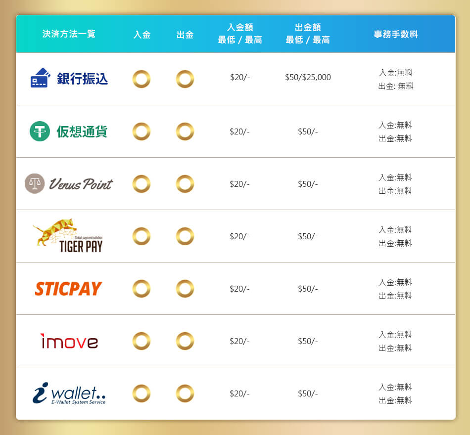

よくある質問
- プロモーション
- 入出金と振替
- 入出金方法
- 登録とアカウント
- アフィリエイト
- ∞4世代ポーナス
- お問い合わせ
-
賭け条件はどこで確認できますか？
マイページ内のプロモーション申請ページにてご確認頂けます。
プロモーションごとに賭け条件などは異なりますか？
プロモーション／ボーナスについてそれぞれ条件詳細が異なるため、ご不明点がございましたら、随時ライブチャットでお問い合わせいただけます。
-
どのようにウォレット間の移動を行いますか？
ログイン後、右上の【振替】をクリックしていただきますとウォレット移動可能でございます。
振替元ウォレットと振替先ウォレットを選択後、振替金額をご入力ください。
注意：
ゲームウォレット間の振替はできません。先にメインウォレットへ振替後、プレイするゲームウォレットへ振替ください。
出金時、審査が必要ですか？
初めてご出金される場合は、ご本人様確認のため、身分証明（KYC）の送付が必要になります。
1. 身分証明書（写真付き）
2. 現住所確認用書類（公共料金などの請求書）
本人確認書類として認められているのは、以下の 5 つの書類です。
1. 運転免許証（両面）
2. 住民基本台帳カード（両面）
3. パスポート（表面に写真ページ、裏面に住所記入ページ）
4. 外国人登録証 (ARC)
5. マイナンバーカード（両面）※裏面のマイナンバーは付箋などで隠し可能
必要な情報
1. 写真
2. お名前
3. 住所
4. 発行日
5. 有効期限
6. 生年月日
7. バーコード（パスポートの場合）
本人確認書類は、
1. 身分証明書と現住所確認用書類の住所は一致している必要があります
2. 四隅が入るようにすること
3. 手ブレや光の反射を防いで、文字がハッキリ見えるようにすること
4. 有効期限内のもの
上記 4 点に注意しながら、【書類に手書きで 「FORTUNA認証用」 と書いた紙と一緒に撮影】して ライブチャット までお送りください。
画像加工ソフトなどで編集はしないでください。
当サイトでは 24 時間出金可能となっております。
KYC 完成後、出金審査を行います。
入金時、審査が必要ですか？
クレジットカードで入金する場合のみご本人様名義のカードを所持しているかを確認のため、カード表面と裏面をカメラやモバイル端末などで撮って画像化して、
【書類に手書きで 「FORTUNA認証用」 と書いた紙と一緒に撮影】して ライブチャット までお送りください。
当サイトでは 24 時間入金可能となっております。審査が完成次第、直ちに入金を反映いたします。
ご注意：
1. 当サイトで利用履歴のないクレジットカードのみ提示する必要があります。
2. クレジットカードが「3D セキュア」に対応していない場合は、Mastercard、VISA が利用できません。
最低入出金額および最高入出金額はいくらですか？
1 回の入出金可能額は各決済方法によって異なりますので、各入出金方法のご注意をご参照ください。
入出金の審査時間はどのくらいかかりますか？
プレイヤー様と当サイトとお互いの権利を保護するために、一定のお時間を頂戴しております。
審査部門はできる限り早めに審査を終了して処理を完了いたします。
審査状況の確認をされたい場合は、カスタマーサポートまでお問い合わせください。
-

決済方法詳しくはこちら:
1. TIGER PAY
2. VenusPoint
3. iwallet
4. STICPAY
5. imove
入金が反映されるまでの時間
入金方法によって、FORTUNAのアカウントに入金が反映されるまでの時間が異なります。
銀行振込
ご入金
1. 入金反映時間目安: 約10分〜1時間 (混雑時にはお時間を要する可能性も御座います。)
2. ご入金対応時間:24時間対応
ご出金
1. 出金処理時間目安:約10分〜~1時間(混雑時にはお時間を要する可能性も御座います。)
2. 出金申請をしていただいた後、基本的には24時間以内に処理を完了するように心掛けております。
出金の際にはアカウントの利用状況に応じてアカウント認証をお願いすることがございます。その場合、出金手配はアカウント認証が全て完了してから開始されますことを予めご了承くださいませ。
なお、週末や祝日の出金手続きは通常より時間を要しますことご了承ください。上記の時間を経過しても反映されない場合は、ライブチャットまでお問合せください。
-
携帯電話に認証コードが届きません。
ご登録になった携帯番号が正確かどうかを今一度ご確認ください。
なお、受信拒否を設定されることによって、SMSが届かない事例が多発しておりますので、この点も併せてご確認いただければ幸いです。
ご確認後も届いていない場合は、ライブチャットまでお問い合わせください。
解約（退会）、アカウント凍結はどのような手続きが必要ですか？
当方のアカウントはお一人様1アカウント、1世帯に付き1アカウントとさせていただいている関係で、アカウントの削除はできません。
ライブチャットまでご連絡いただきますと使用禁止アカウントとしてお手続きをさせていただきます。
当サイトのシステム上、アカウント凍結の手続きとなっておりますのでご理解いただければ幸いです。
ご連絡いただかない限り、アカウントが再開されることはございませんのでご安心ください。
退会のご申請は下記ご登録情報と退会したい理由をご提示の上、
ライブチャットまたはメール fortuna8888.jp@fortuna888.net でお知らせください。
理由、ユーザーID、お名前（漢字）、携帯番号、メールアドレス
関連部門で確認でき次第、直ちにアカウントの凍結をさせていただきます。
アカウントを再開したい場合、ライブチャットまたはメールでご連絡ください。
迅速に対応をさせていただきます。
パスワードを紛失してしまいました。
パスワードをお忘れの場合は、「ログイン」→「パスワードをお忘れですか？」より、ご自身にて仮パスワードを請求できます。
携帯またはメールへ仮パスワードが届きます。仮パスワードでログイン後、
【ユーザーセンター】→【アカウント設定】→【パスワード変更】にてお好きなパスワードへ再設定をお願いいたします。
カスタマーサポートでも仮パスワードを発行することが可能ですので、
下記登録情報を正しくご提示の上、ライブチャットまたはメールにてお問い合わせください。
ユーザーID、お名前（漢字）、携帯番号、メールアドレス
アカウントを複数作成することは可能ですか？
当サイトのご利用はお一人様、一世帯、一住所、一家族、同一IPアドレスに対して一アカウントとさせていただいております。
いかなる場合においても、各顧客、各世帯、各アドレス、各共有コンピュータ、および共有IPアドレスごとに、1つのアカウントのみFORTUNAをご利用いただけます。
「重複アカウント」を発見した場合は、予告なしに閉鎖することがあります。
-
アフィリエイトをやりたいです。
下記までご連絡いただきますようお願いいたします。
fortuna8888.jp@fortuna888.net
当サイトのパートナー様になり、お持ちのブログやサイトで紹介することによって
高い報酬を稼ぐチャンスを得られます。本業やプライベートに一切影響することはございません。
もちろんライブチャットでのお問い合わせも大歓迎です！
-
4世ボーナス報酬について
FORTUNA会員全員ボーナス報酬参加する事になる。
内容：
1. 2世代目は毎日総ベット数の0.2％ボーナス報酬になる
2. 3世代目は毎日総ベット数の0.05％ボーナス報酬になる
3. 4世代目は毎日総ベット数の0.05％ボーナス報酬になる
4. 会員代理がプロモーションコードを取得するためのパス：ログインしてFORTUNAカジノを登録→トップアップ→招待コードのコピーURLを宣伝するかQRCODEを保存する
5. 会員が推薦できる会員数に上限はなく、会員もらえるボーナス報酬も上限はありません。
6. 出金申請する前に、ボーナス報酬は賭けの1倍である必要があります。
会員ボーナス報酬プラン：
会員アフィリエイトは、2世代目の会員によって生成されたボーナスを引き出すことができます（会員の有効なベット数Xボーナス％）+最大で2世代目~4世代目の会員生成された最大0.3％のボーナスを引き出すことができます。ボーナスポイント無制限。
例：写真をご覧ください
FORTUNAは、本ボーナスを予告なしに終了する権利及び本ボーナスに対するすべての最終決定権を有します。
-
ライブチャットでいつでもお問い合わせいただけます。
Eメール：fortuna8888.jp@fortuna888.net
日本語サポートの対応時間
メール・チャットともに、
通常、応答にかかる時間: 30-180秒
月 - 土 24 時間 (日本時間)
日 10:00 - 18:00 (日本時間)